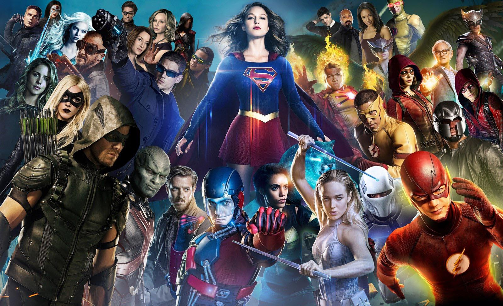
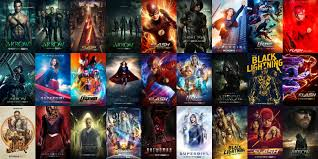
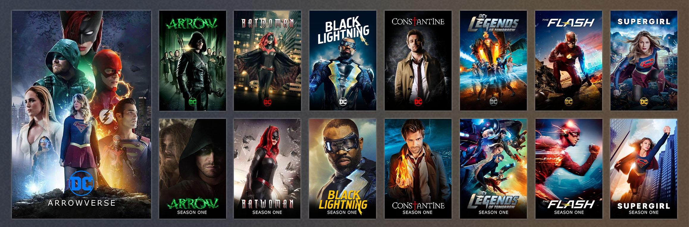
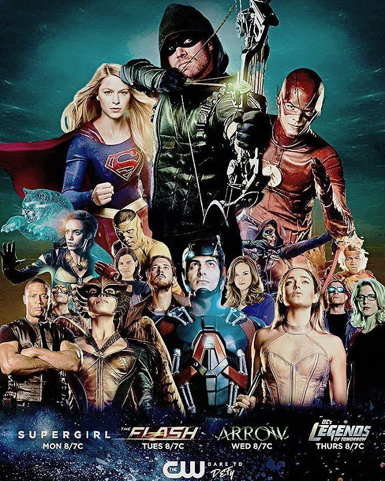
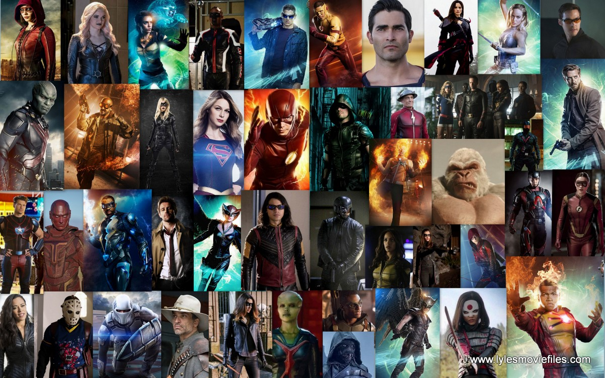

The Arrowverse
is an American media franchise and a shared universe that is centered on various interconnected television series primarily airing on The CW and web series airing on CW Seed. The series were developed by Greg Berlanti, Marc Guggenheim, Andrew Kreisberg, Geoff Johns, Ali Adler, Phil Klemmer, Salim Akil and Caroline Dries, and based on characters appearing in publications by DC Comics. Set in a shared fictional multiverse much like the DC Universe and DC Multiverse in comic books, it was established by crossing over common plot elements, settings, cast, and characters that span six live-action television series and two animated series.

The franchise began with Arrow, based on the character Green Arrow, which debuted in October 2012. It was followed by The Flash in 2014, and the animated web-series Vixen in 2015. The franchise was further expanded in 2016, when in January of that year a new series titled Legends of Tomorrow debuted, starring characters that originally appeared on both Arrow and The Flash. Later that year, the CBS series Supergirl, having already crossed-over with The Flash, was moved to The CW for its second season, where it has remained since. A second animated web-series, Freedom Fighters: The Ray, was released in 2017, which followed Ray Terrill / The Ray, who would make a live-action appearance during that year's crossover event "Crisis on Earth-X". In addition to the live-action and web-based series, the franchise has spawned three promotional tie-in live-action web series, Blood Rush, Chronicles of Cisco, and The Flash: Stretched Scenes; released in 2013, 2016, and 2017 respectively. A fifth series, Batwoman, premiered in 2019, with a sixth, Superman & Lois, scheduled for 2021. Since 2014, there has been a yearly crossover event involving many of the live-action series of the Arrowverse. Additionally, Matt Ryan has reprised his role as John Constantine from the NBC series Constantine, initially in guest appearances in episodes of Arrow and Legends of Tomorrow, before becoming a series regular for the latter, in addition to continuing storylines from the former series.

The 2018 and 2019 crossovers, "Elseworlds" and "Crisis on Infinite Earths", respectively, saw multiple DC television series and films be retroactively added to the franchise's multiverse. "Crisis on Infinite Earths" also rebooted the multiverse, which saw Supergirl join the other live-action series on a new fictional earth along with the series Black Lightning, which had previously been separate up to this point. The franchise has been successful, creating a large fandom around the world and has received positive reviews, where critics have praised the themes, acting, action sequences, direction and character development.

In August 2015, in a video about the production of Vixen's first season, Guggenheim referred to the series' shared universe as the "Arrowverse". Kreisberg confirmed that this was the name the producers used for it. The universe has also been referred to by the media as the "Flarrowverse", "Berlanti-verse" and "DC TV-verse". In September 2020, The CW released a trailer for the various series that would be airing on the network in 2021, which featured the name "The CWverse" in it. Many outlets felt the change was due to Arrow having ended and the character no longer a part of the shared universe. However, Matt Webb Mitovich of TVLine felt that with the inclusion of Stargirl in the trailer, which exists on a parallel earth to the Arrowverse, the name was perhaps a way to discuss all of the superhero series airing on network at the time. Mitovich also pointed out the term had been used a year prior in a similar trailer, which had featured the Arrowverse series plus Black Lightning, which was not part of the universe at that time. Jake Abbate of SuperHeroHype also referred to the name as encompassing the "programming block" of superhero shows on the network. Daniel Gillespie from Screen Rant felt if this was The CW's attempt to change the Arrowverse's name, that fans and the media would not "suddenly start" using the name, and if The CW kept using the term, could "lead to a situation where the universe is called one thing officially, but another entirely by the majority of people who watch it".
